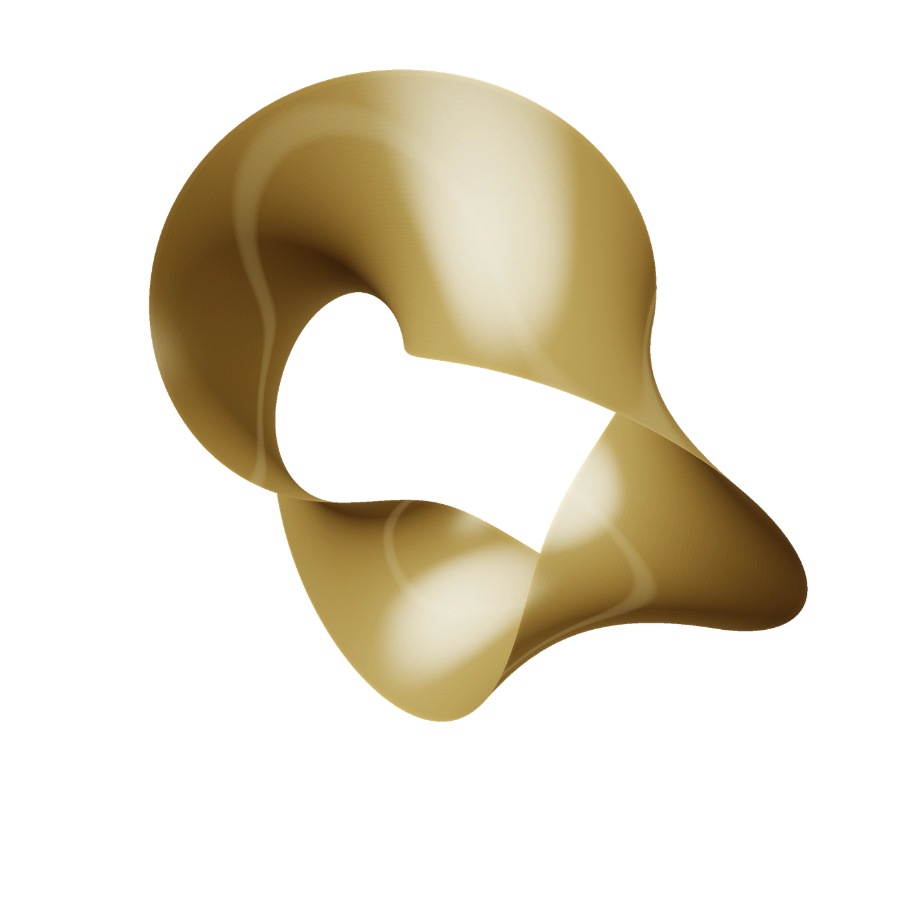
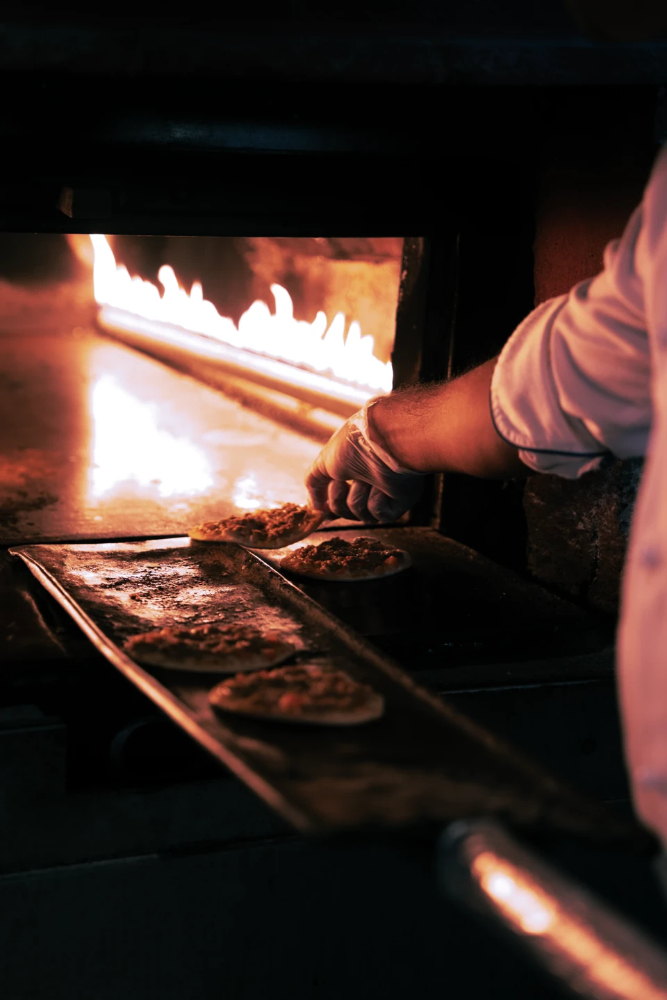
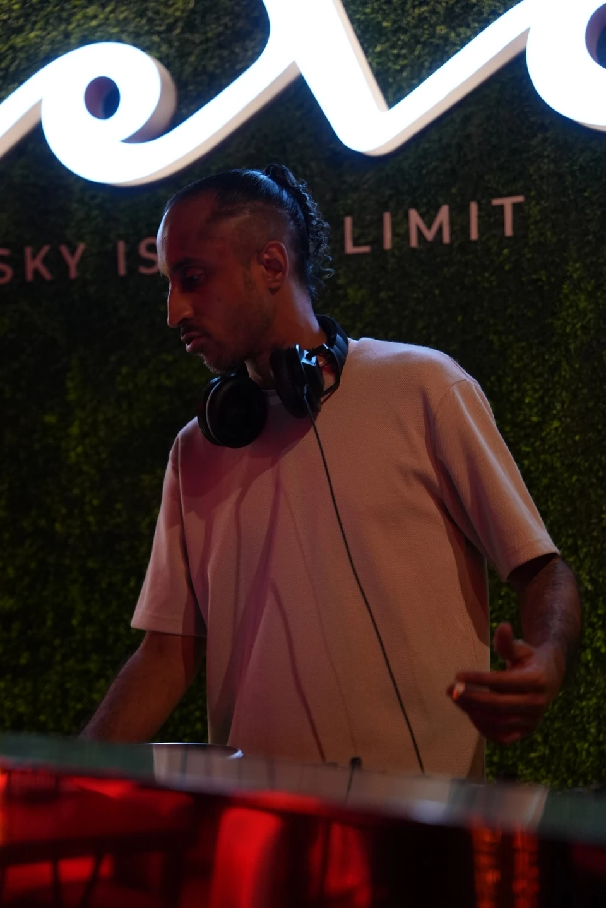

3D Artist
Deer Scene
An idling deer in an atmospheric Blender environment, exploring lighting and mood.
33 stills from the original video. Playback uses an external link where available.
Bahrain · Independent creative practice
Filmmaker, director, editor.
3D animation, motion design and photography.

2026 SHOWREEL · 9:16
Open showreel
A studio study in form & light
Still view · live orbit is optional
The screening room
Choose a project to bring it onto the monitor. Scrub through frames from the original footage.
3D Artist
An idling deer in an atmospheric Blender environment, exploring lighting and mood.
33 stills from the original video. Playback uses an external link where available.
Print room
Nine photographs arranged from the heat of the kitchen to the color of the night.






End of session
Have something in mind? Let’s talk.